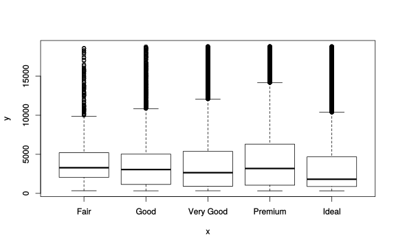
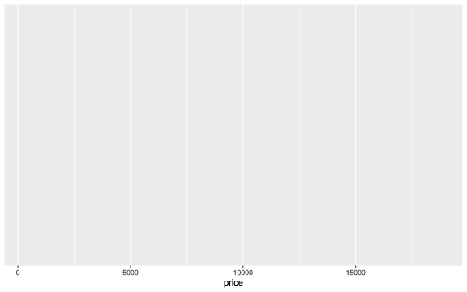
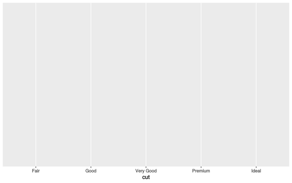
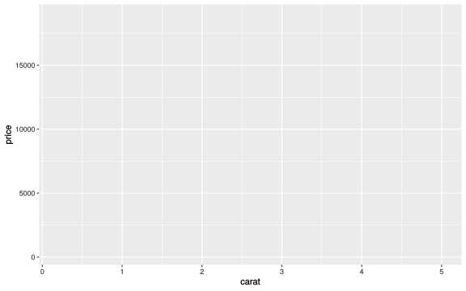
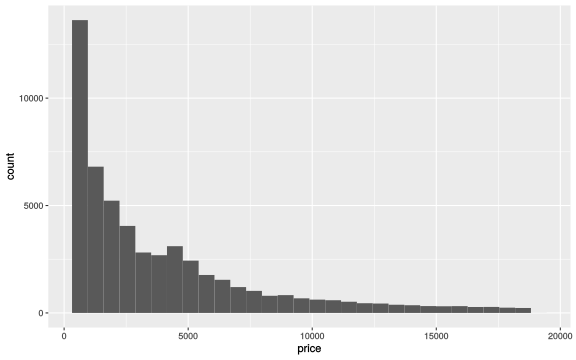
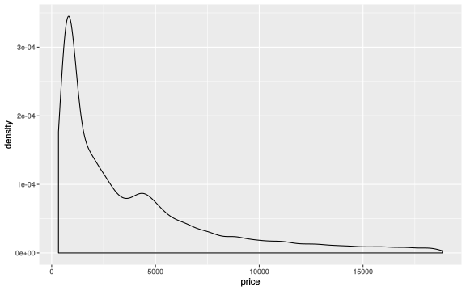
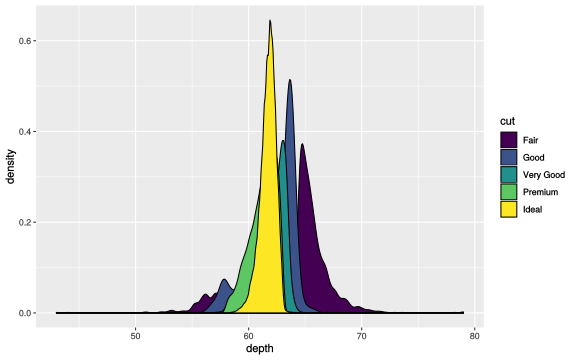
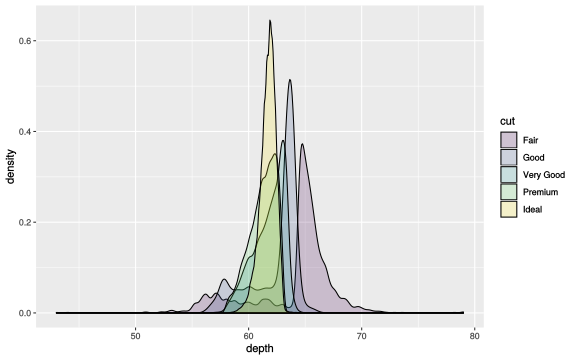
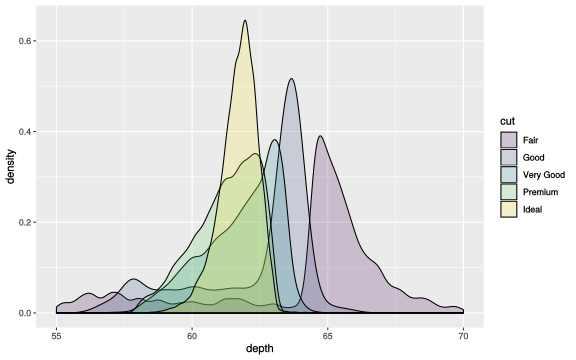

Visualizing Data
Introduction
Tables: data.frame’s
One of the data sets that ggplot2 comes with is diamonds. Get a preview:
# A tibble: 6 x 10
carat cut color clarity depth table price x y z
<dbl> <ord> <ord> <ord> <dbl> <dbl> <int> <dbl> <dbl> <dbl>
1 0.23 Ideal E SI2 61.5 55 326 3.95 3.98 2.43
2 0.21 Premium E SI1 59.8 61 326 3.89 3.84 2.31
3 0.23 Good E VS1 56.9 65 327 4.05 4.07 2.31
4 0.290 Premium I VS2 62.4 58 334 4.2 4.23 2.63
5 0.31 Good J SI2 63.3 58 335 4.34 4.35 2.75
6 0.24 Very Good J VVS2 62.8 57 336 3.94 3.96 2.48You can see how many observations a data set has with nrow:
[1] 53940That’s a few!
Each column on a data.frame is just a vector of values. To get the vector of data in a column you can use the short hand $ syntax:
[1] Ideal Premium Good Premium Good Very Good
Levels: Fair < Good < Very Good < Premium < IdealYou can also use the longer form [[..]] syntax:
Note the use of quotes with [[..]] but not with $. See what happens if you use single [...] on a data.frame column:
# A tibble: 6 x 1
cut
<ord>
1 Ideal
2 Premium
3 Good
4 Premium
5 Good
6 Very GoodWhat did you get? What’s the difference between double and single brackets?
RStudio also has a very nice interface for inspecting a data.frame with the View function (note caps):
Plotting
Or a quantitative and categorical variable:

What did you get there?
The first component of any plot is the data. You define the table by passing it as the first argument to the ggplot2 function:
And you get a beautiful empty box. Exciting! We’ll get there.
Visualize the price variable:

Visualize the cut variable:

Visualize price as a function of carat (independent, dependent):

Why does this relationship make more sense than the inverse?
A scatter plot with points:

A histogram:
`stat_bin()` using `bins = 30`. Pick better value with `binwidth`.
A density distribution:

How do these two methods compare for visualizing the dispersion of values in a quantitative variable?
Grouping variables
To use fill color to group values, we add that to the aesthetic mapping, because it’s about what we’re plotting:


Finally, to focus in on the main body of the data (binning out very large and very small values), we can set the x-axis limits with xlim:
Warning: Removed 45 rows containing non-finite values (stat_density).
And there it is!